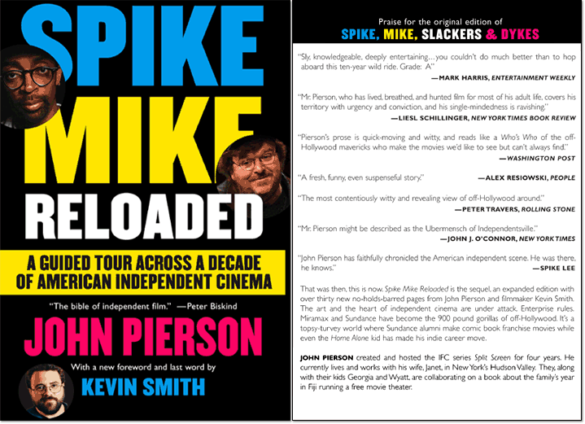
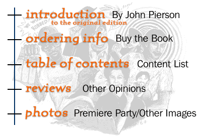
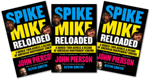

|


Variety called John Pierson the "guru of independent film." Why? Perhaps because he wrote Spike Lee a $10,000 check to finish She's Gotta Have It, and sold Michael Moore's documentary to Warner Brothers for $3 million. Maybe it's because he helped make "slacker" a housesold word with Richard Linklater's 1991 film, has seen over 1,000 debut features, and unlike most independent film companies, managed not to lose his shirt while backing the movies he supported. In short, he's been at the epicenter of the tumultuous last decade that changed independent film forever and launched a new generation of hilarious, ambitious, talented, and somewhat whacked filmmakers. In Spike, Mike, Slackers & Dykes John Pierson uses his own experience to tell the unvarnished truth about the importance of timing and marketing; the personal and professional politics of film financing; creating a sensation on the film festival circuit; the dark side of overnight success; and the anatomy of details that get films to a theater somewhere near you. Spike, Mike, Slackers & Dykes is a first of it's kind - an inside look at the art, the heart, and the enterprise of the spiteful, fractious, and finally, entertaining place that is the world of independent cinema. John Pierson lives and works with his wife Janet, in the Hudson Valley of New York, where he stages an annual summer film workshop. |

© 1997 - 1999 Grainy Pictures, Inc.